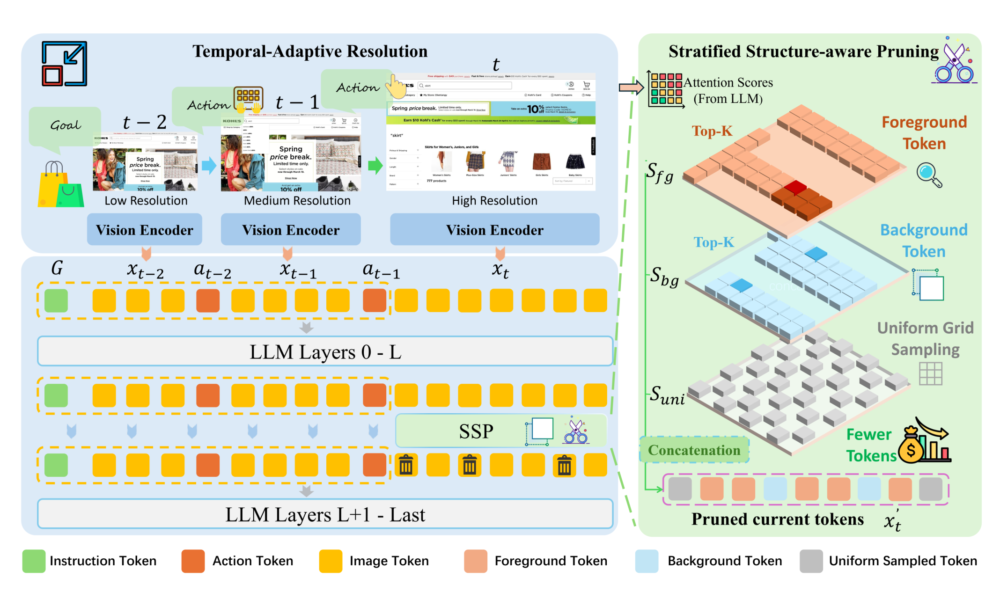
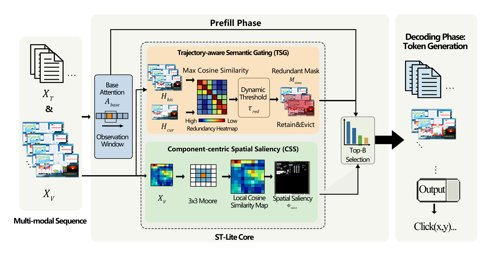

三、课题研究内容
□ 研究一：面向混合能力范式的可信评测（已完成）—— 前期探索：纯 GUI 范式下的推理效率优化
评测
GUI
■ 问题：长程 GUI 轨迹中高分辨率截图持续累积，视觉 token 与 KV 缓存（KV Cache）线性膨胀；通用压缩方法忽视帧间冗余与界面二维结构

GUIPruner（投稿 KDD 2027）：视觉 token 压缩 —— 时间自适应分辨率 + 结构感知剪枝

ST-Lite（EMNLP 2026）：KV Cache 压缩 —— 轨迹门控 + 组件显著性
3.4×
FLOPs 降低，性能保持 >94%
3.3×
视觉编码加速
20% KV
预算下与完整缓存持平
2.35×
5 倍压缩下解码加速
开销可以显著压缩，但纯 GUI 范式"每一步都处理整屏截图"的本质未变 → 范式本身是否合理？